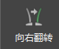
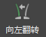
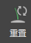
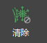

可以使用“编辑”(Edit)部分中的选项针对整个修饰（而不是笔刷覆盖的区域）执行操作。
, 
使用“向右翻转”(Flip To Right) “向左翻转”(Flip To Left)两个翻转选项可将修饰的一侧替换为另一侧的镜像版本。例如，如果选择“向右翻转”(Flip To Right)，网格右侧的所有样条线都将删除并替换为左侧样条线的镜像版本。使用这些选项之后，可能需要使用笔刷触摸靠近曲面中心线的区域。
对方向或姿势已经确定的样条线应用自动平滑处理。平滑效果会平均化笔刷笔划可能错过的任何样条线。“自动扭曲”(Auto Twist)仅影响通过雕刻操作（如“弯曲”(Bend)）修饰过的样条线。

删除当前修饰，并将属性重置为默认设置。

删除曲面上绘制的所有遮罩。